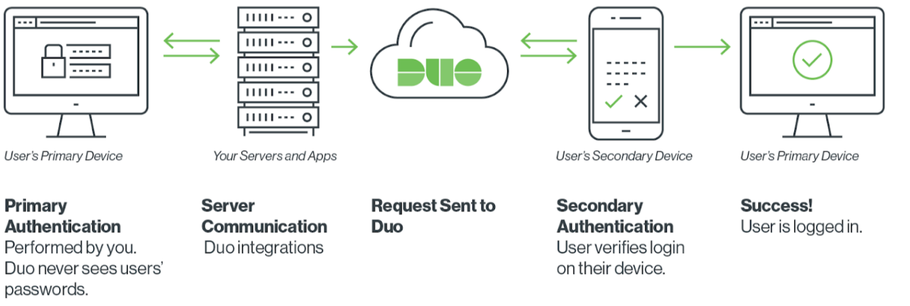

Use of MFA for on premise privileged accounts
Agenda
Use of MFA for on premise privileged accounts
Overview
Best practices for MFA
Why MFA is important
Implementation considerations
Examples of products
Summary
Overview
Multi Factor Authentication works on the principle of requiring more than one of these items:
Something you have (such an authentication application on your phone)
Something you know (such as your username and password)
Something you are (such as fingerprint or iris recognition)

Best Practices
Best practices for the usage of MFA include :-
Protection of Online Administrative Accounts (Such as M365 Global Administrators)
Protection of Internal Domain Privileged Accounts (Such as Domain Administrators, SAN Administrators, - - Backup Server Accounts)
Protection of User Accounts for Remote Access
Protection of Regular M365 User Accounts when not in ‘Whitelisted’ locations
Why MFA is important
Using MFA on On Premise Privileged User Accounts:
- These accounts are extremely important and unauthorised usage can result in significant damage to internal systems. As with other items listed, requiring additional authentication will help protect the accounts even if a valid username and password are used to access key services such as Domain Controllers, Storage Systems, etc.
Using MFA on M365 User Accounts when not onsite:
- By using a specific type of Conditional Access Policy you can require a user to use MFA when accessing their emails or Microsoft 365 located files when they are not connected to your local network, or trusted locations. This will reduce user impact by allowing them to connect with just usernames and passwords when working internally.
Examples of products for on premise MFA
For On Premise Domain accounts (privileged or not) you can use any number of MFA systems, some are Free, others are chargeable. Suitability should be assessed before selecting one. The old adage of ‘You get what you pay for’ is quite true with technologies of this type !
Many premium (chargeable) products give a free trial so you can see suitability.
Options include but are not limited to Microsoft Authenticator App, Google Authenticator App, Cisco Duo, RSA.
For Standalone Systems check with the system manufacturer for compatibility with MFA Solutions.
How does MFA work ?

MFA ‘transactions’

The client device establishes a connection
The target device refers to the AD for approval
If approved the target device then contacts Duo
Duo then contacts the MFA device (usually the users mobile device
If Duo approves the target device is notified to allow a connection
The target device notifies the client device and allows connectivity
Overview of installation for a specific server
To integrate Duo with Windows RDP, you simply have to run the Duo Authentication for Windows Logon installer on your Microsoft session host with admin privileges.
During the installation, you’ll enter in the integration key, secret key and API hostname that Duo provides you.
In addition, you can customize a few different policy options (like bypassing auth if the device is offline, or using auto push) as part of the installation process.
Now when you log into a Windows Server, you’ll automatically be prompted for two-factor authentication after providing primary login credentials.
https://duo.com/blog/protecting-windows-servers-and-remote-desktops-with-duo
Jump Servers, RBAC Integration & MFA
Consider the use of Jump Servers with the relevant administration tools on them (eg Active Directory Management, SQL Management, Exchange Management, etc) as the servers to implement MFA onto.
Your privileged users should use their MFA enabled privileged accounts to log onto these servers to carry out the administrative tasks, rather than going to the servers directly.
Final considerations*:
You will need to consider how administrators can gain access to the service if multi-factor authentication is unavailable. This could be caused by a service configuration or the loss of an authentication token.
Creating an emergency (‘break glass’) account would give you the capability to log in to a server which has administrative accounts protected by MFA in the event of an MFA service failure. These accounts should have hyper-complex passwords and known only to a small number of high level administrators, ideally in a Password ‘Safe’ product, so the passwords are not easily viewed.
Accounts such as an emergency or ‘break glass’ accounts that use a single authentication factor should be the subject of increased protective monitoring so that its misuse can be easily detected.
*https://www.ncsc.gov.uk/guidance/multi-factor-authentication-online-services
Further Reading
Overview:
https://www.microsoft.com/en-us/security/business/identity-access-management/mfa-multi-factor-authentication
On Premise Options (No Integration with Azure AD)
Manageengine ADSelfService Plus:
https://www.manageengine.com/products/self-service-password/windows-logon-two-factor-authentication.html?lhs
Cisco Duo:
https://duo.com/blog/protecting-windows-servers-and-remote-desktops-with-duo
https://duo.com/docs/rdp
Where Active Directory is Integrated into Azure AD (M365):
Azure MFA
https://docs.microsoft.com/en-GB/azure/active-directory/fundamentals/concept-fundamentals-mfa-get-started